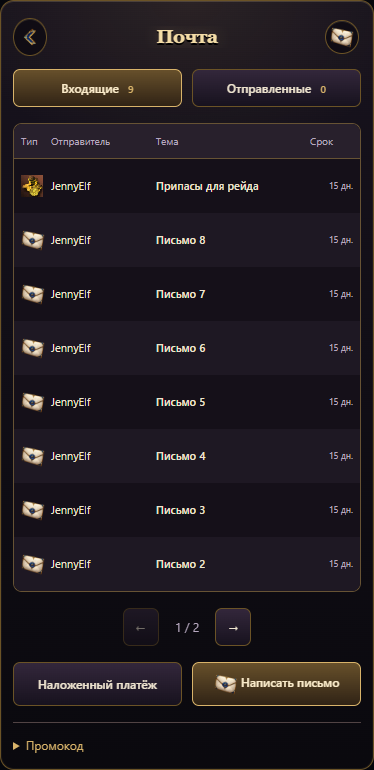
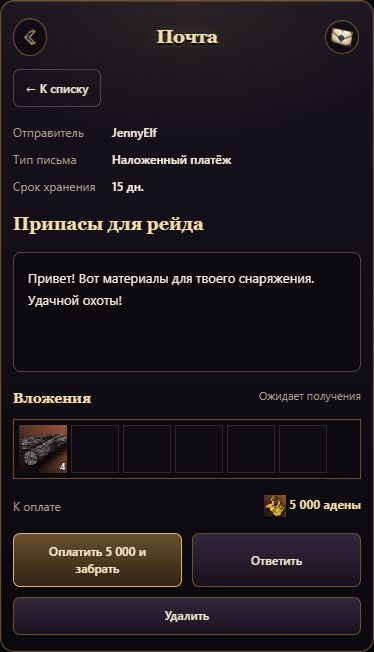
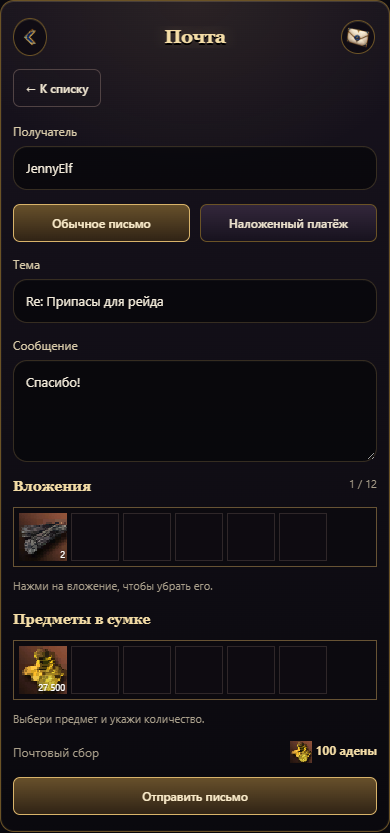

Входящие и отправленные письма, вложения и наложенный платёж. Отправка — 100 адены, до 12 вложений. Письма игроков хранятся 15 дней; неполученные предметы возвращаются отправителю.



Рыбалка, магазин и уведомления